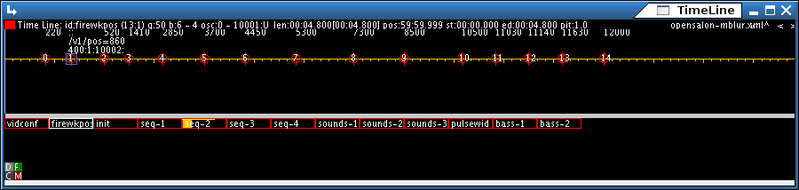
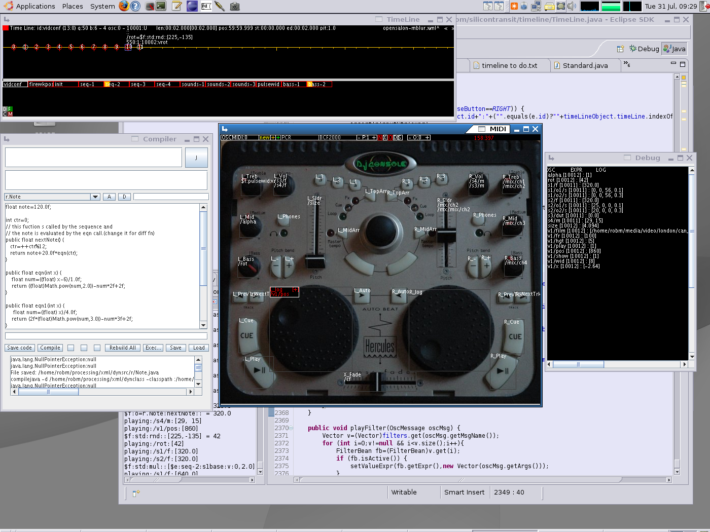
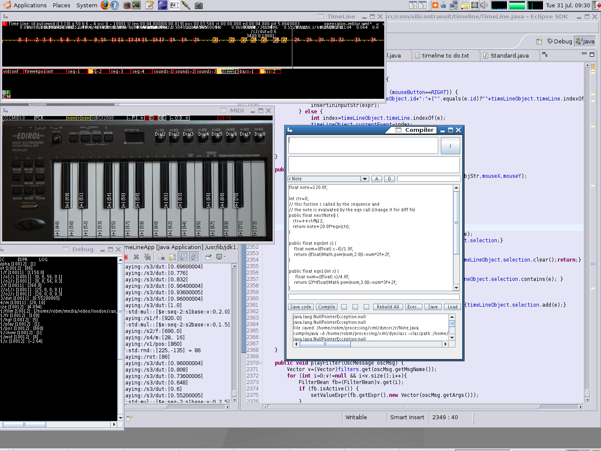
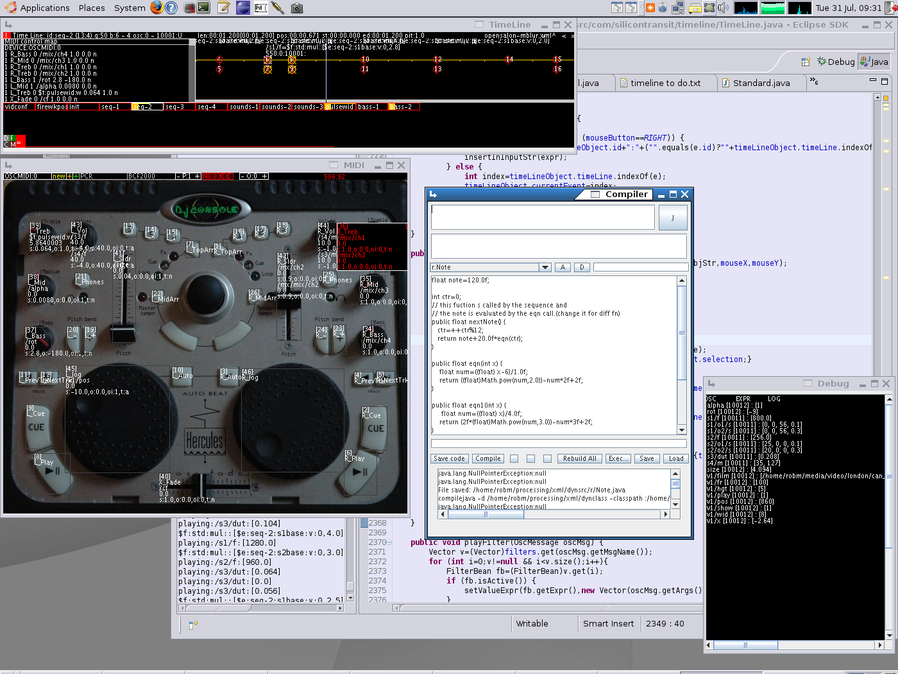

Introduction & features
What is it ?
It is a OSC sequencer, individual OSC events are programmed onto
timelines, the OSC messages are used to control seperate audio and
video PD patches, but could be any OSC enabled software.
- Timelines can be sequenced together (timelines can play other timelines). A "Tree" of timelines can execute for increased complexity.
- Midi controllers can be configured to play via OSC. Multiple maps can be configured to play different sets of osc events.(e.g. for different instruments). A photo of the controller can be configured to overlay with the configured osc messages.
- OSC events can be sent to the sequencer and can be routed to other OSC ports. Filter can trigger osc messages based on other osc messages.
- A simple expression language allows you to manipluate data
in the software. Expressions can be invoked anywhere an osc message can
be configure, an expression can do lot of different things (mainly set
different data in the interface) :
- Trigger a timeline, set its speed, position,
- Invoke java code. eith standard java objects, custom objects written as a package or in the compile window.
- Set event parameters, event targets, osc destinations,
- Midi controller values can be set.
- Java can be live coded in the interface - as code is written it can be intermittently compiled and the generated class loaded.

Figure 1: Screenshot - designed to have a minimal screen footprint.Project status
At the moment this software is in a very alpha stage but i am
interested to see if there is any other similar project or interest by
other in the concept.The software is built in Java, it started out a s a processing applet but after the complexity grew i decided to rewrited parts of it (mainly the draw methods in plain java 2D) for efficiency sake.
It seems to run fairly quickly at the moment (my comp is a 2Ghz duo though so it should ), but i think it should be reasonably efficient even on slower machines.
It does suffer from useability issues at the moment but hey its free and it (mostly) works :)
There is a short video here
contact timeline at silicontransit dot com
Download / Source
Download files
I am only distributing source at the mo as a binary most likely wouldnt work. I use eclipse to build. It should work with a standard java 5 which is what i use i have not tested it with java 6. You will have to be fairly proficient with Java to get it up and running.
- timeline_151107.tar.gz: The source code classes. compiled for j2sdk_1.5.0_12.
- timeline_conf.tar.gz: The config files unpack to your home directory (makes the dir .timelinerc)
Some instructions.
- Unpack timeline_151107.tar.gz to dir TIMELINE_UNPACK (you choose it)
- Unpack timeline_conf.tar.gz to your home directory (makes the file .timelinerc)
- make sure you have j2sdk_1.5.0_12 installed and have your environment variable JAVA_HOME set to its path.
- edit the config.xml in .timelinerc to have the classpath pointing to your TIMELINE_UNPACK/timeline/Timeline/classes directory
Config file formats.
The config file should be named config.xml and be located at XML_PATH/config.xml - this is the main config file for the software.
| Config file (xml/config.xml) | ||
| XML Path | Data format | Description |
| /config/hosts/host | Host element | |
| /config/hosts/host/@addr | hostname/ipaddr | to other OSC software. |
| /config/hosts/host/@rcvPort | port | that timeline recieves OSC on. |
| /config/hosts/host/@sndPort | port | that the other software recieves on. |
| /config/midi/device | Config for a MIDI device | |
| /config/midi/device/@id | String | The prefix for the midi device name (e.g. without [hw x,y] on the end), OSCMIDI:x is a special name that treats /midi x <part> <val> (this is because my hercules is a joystick under linux) |
| /config/classpath | String | The class path for compilation purposes set TIMELINE_UNPACK/timeline/Timeline/classes. |
| /config/datapath | String | arbitrary |
| /config/mappath | String | the path to the maps config file (in the example case XML_PATH/maps/ControlMaps.xml) |
The mapping config file should be located at /config/mappath (from config.xml) - this is the main config file for MIDI controller config the software.
In the MIDI window using the middle button a rect can be drawn, the coords are shown in the to right of the MIDI window, clicking on the square next to it copies the XML to the clipboard (useful for pasting into this config file )
| Controller mapping Config file (/config/mappath ) | ||
| XML Path | Data format | Description |
| /controlConfig/device/@timeLineId | String | The id the timeline uses - this is stored in files |
| /controlConfig/device/@midiId | String | The id the OS gives the midi device i.e. which one tto actually open can exclude the [hwx,y] |
| /controlConfig/device/@image | File Path | The full path to the image file |
| /controlConfig/device/control/ | int | configure a control |
| /controlConfig/device/control/@num | int | control number |
| /controlConfig/device/control/@desc | String | short description (to display on image) |
| /controlConfig/device/control/@width | int | the width of the rect to map |
| /controlConfig/device/control/@height | int | the height of the rect to map |
| /controlConfig/device/control/@top | int | the top of the rect to map |
| /controlConfig/device/control/@left | int | the left of the rect to map |
| /controlConfig/device/notes/ | configure a keyboard | |
| /controlConfig/device/notes/@width | int | the width of the rect to map the whole area of the keys |
| /controlConfig/device/notes/@height | int | the height of the rect to map |
| /controlConfig/device/notes/@top | int | the top of the rect to map |
| /controlConfig/device/notes/@left | int | the left of the rect to map |
| /controlConfig/device/notes/@octaves | int | the number of octaves |
| /controlConfig/device/notes/@textAlign | String | 'vertical' (else assumed horizontal) |
| /controlConfig/device/notes/@blackKeyWidth | int | the width of a single black key |
| /controlConfig/device/notes/@blackKeyHeight | int | the height of a single black key |
Manual
TimeLine - built with processing.
OSC message timelineing and sequencing.
File operations :-
Input modes :- input data o set object properties.
global properies:-
for timeline:-
for event:-
- set same timeline to rotate playmode (p=play, l=loop, b=bang (bang plays all events at one time instant, then stops till next bang))
- add data to send to play fn by adding : then data.(for p & l sets start position, for b set start event).
Input modes :-
$ Expression format :- specifies an object to send a value to.
$ = set val a execution time , % = set val at input time (eval to a number).
MIDI format:-
Set:$m:<device_number>:<partNum>_<controlNum>:[v|s|o]:[controlIndex]
Get:[%$]m:<device_number>:<partNum>_<controlNum>:[v|s|o]:[controlIndex]v: set value.
s: set scale.
o: set offset.
controlIndex: index of the controllsetting under that control.
if controlIndex is omitted then the setting is applied to all controlsettings under that control.
Get:[%$]m:<device_number>:<partNum>_<controlNum>:[v|s|o]:[controlIndex]
Timeline format:-
Set:$t:[<timeLineId>|current]:[p|l|x|v|c|w]:[parameterIndex]
Get:[%$]t:[<timeLineId>|current]:[p|l|x|v|q|b|r|c|w]:parameterIndexcurrent: current time line.
p: toggle play mode.
l: toggle loop mode.
x: get/set position.
w: get/set pitch.
v: get/set parameter at (optional) parameterIndex. if no index then the parameters are set as a list.(current list is replaced).
q: get quantization timelength(ms).
b: get beat timelength(ms).
r: get bar timelength(ms).
c: current event index.
no [p|l|x|v|q|b|r|c|w]: (get) return timeline object.
Get:[%$]t:[<timeLineId>|current]:[p|l|x|v|q|b|r|c|w]:parameterIndex
Event format:-
Set:$e:[<timeLineId>|current]:[<eventIndex>|current]:[v|i|m|f]:[valueIndex]
Get:[%$]e:[<timeLineId>|current]:[<eventIndex>|current]:[v|i|m]:[valueIndex]current: current time line.
v: get/set value.(optional valueIndex)
i: get/set oscMsgName.
m: get/set oscIndex.
f: fire event(set only). data is ignored.
no [v|i|m]: (get) return event.
Get:[%$]e:[<timeLineId>|current]:[<eventIndex>|current]:[v|i|m]:[valueIndex]
Function (Java method call) format:-
Set:$f:<var_name>=<class_name>:<methodname>:[n]:
Get:[%$]f:<var_name>=<class_name>:<methodname>:[n]:(<args>)
* objects are stored in a global hash array
* if <var_name> then new object always used.
* if <class_name> then retreive object from global array for this <var_name>
* in Set event values are used for method arguments.n: new object.
args: (, separated) (only in get) evaluated objects to send to function ($T=timeline).
Get:[%$]f:<var_name>=<class_name>:<methodname>:[n]:(<args>)
* objects are stored in a global hash array
* if <var_name> then new object always used.
* if <class_name> then retreive object from global array for this <var_name>
* in Set event values are used for method arguments.
MIDI operations :-
Controller input string:-
(part ctlNumber oscIndex [$expr|/oscMsg] scale offset type[-])
part: the part number.
ctlNumber: the control number.
oscIndex: the the oscIndex.
[$expr|/oscMsg]: either an expression(see above) or an OSC message.
scale: multiplier of midi value.
offset: offset of midi value.
type: the control type.
-: (last char) delete this control setting.
- types:-
- b: button.
- t: toggle button.
- n: normal range (0-127)*scale+offset.
- l: logarithmic range (0-127)^scale+offset.
- a: accumulator (e.g. for jogwheel). step=scale, intiial value = offset
Note input string:-
(part startNote endNote oscIndex [$expr|/oscMsg])
part: the part number.
startNote: the start note.
endNote: the end note.
oscIndex: the the oscIndex.
[$expr|/oscMsg]: either an expression(see above) or an OSC message.
Timeline operations :-
Timeline selection :-
Timeline selector :-
-in input mode 'e': set timeline id to input string.
-otherwise if in input mode: puts timeline expression at cursor pos.
-otherwise: selects that timeline.
Timeline funcs :-
Event operations :-
Data can be copied beetween events by selecting
the inputmode for the data and moveing to the event you want to copy it
to then hitting enter. This also works for a whole selection.
g: (de)select event (to selection)
G: (de)select all.
alt+g: - (de)select event of same name or target (priority to name) based on current event,
- if current event selected the removes from selection.
- if current event not selected the adds to selection. y: copy event selection.
Y: Paste event selection.
if (in input mode) {
lft click: select next el to left of mouseClick
shift + left drag: toggle selects timerange.
left click: selects that event.
shift + left click: plays clicked timeline.
a: event (de)activate. (sets selection and currentEvent)
space: fire current event.
d: delete selected event(s) (current evemnt and selection).
c: copy selected event.
right click: create event at click pos.
shift + right click: create event at click pos - copy data from current event.
shift +lft arr : move event to left (toward start)(quantizes)
shift +rgt arr : move event to right (toward end)(quantizes)
shift +ctrl+lft arr : move event 1 beat to left (toward start)(quantizes)
shift +ctrl+rgt arr : move event 1 beat to right (toward end)(quantizes)
shift +alt+ctrl+lft arr : move event 1 bar to left (toward start)
shift +alt+ctrl+rgt arr : move event 1 bar to right (toward end)
shift +alt+lft arr : move event 1 ms to left (toward start)
shift +alt+rgt arr : move event 1 ms to right (toward end)
drag event : move event snap to quantize mark.
ctrl + drag event : move event snap to beat mark.
alt + drag event : move event freely.
Event selection.
- if current event selected the removes from selection.
- if current event not selected the adds to selection.
- ctrl+lft arrow : select next event to left
ctrl+rgt arrow : select next event to right
- lft arrow : select next event to left
rgt arrow : select next event to right
Event selector :-
Event funcs.
Event move.
Set position.
Notes :-
Screenshots
Figure 1: The time line window

Figure 2:The time line window with MIDI (configured for my hercules), compile, and debug subwindows open.

Figure 3:The time line window with MIDI (configured for my Edirol keyboard), compile, and debug subwindows open.

Figure 4:The time line window with MIDI config dialog open and all windows.